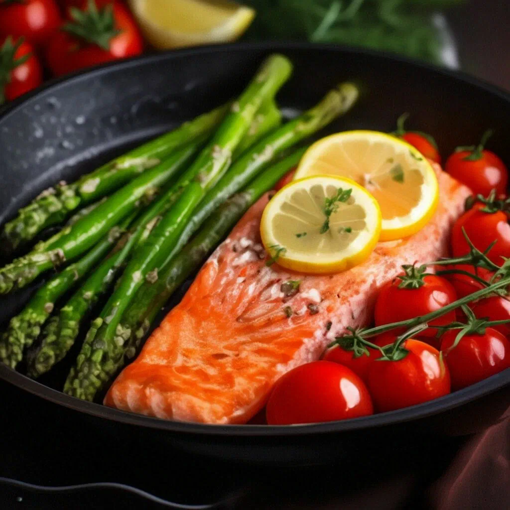

Вот некоторые рецепты:
Нежные блины из рисовой муки.
-
Для этого нам понадобится:
- Cливочное масло — 2 ст. ложки;
- Рисовая мука — 180–200 г;
- Яйца — 3 штуки;
- Молоко — 240 мл;
- Соль — 1 щепотка.
1.Растопите на водяной бане 2 столовые ложки сливочного масла и остудите его до комнатной температуры. 2.В миске взбейте миксером растопленное масло, муку, яйца, молоко и щепотку соли до однородной консистенции. Убедитесь, что в тесте нет комков. 3.Смажьте сковороду маслом и разогрейте её на среднем огне. 4.Обжаривайте рисовые блины с обеих сторон до золотистого цвета.
Филе лосося, запечённое со спаржей и помидорами черри.

-
Для этого нам понадобится:
- Филе лосося — 500 г;
- Спаржа — 400 г;
- Помидоры черри — 1 веточка;
- Лимон — половина;
- Лимонный сок — 2 чайные ложки;
- Оливковое масло — 3 столовые ложки;
- Розмарин (для подачи) — 1 веточка;
- Итальянские травы — 0,5 чайной ложки;
- Морская соль — 0,5 чайной ложки.
Промойте филе лосося под проточной водой и обсушите бумажным полотенцем. Натрите рыбу прованскими травами и солью по вкусу, оставьте на 10 минут. Добавьте 1 чайную ложку лимонного сока, половину оливкового масла и снова смажьте рыбу. Промойте спаржу, удалите нижние кончики и выложите на бумажное полотенце для просушки. Застелите противень фольгой, смажьте капелькой оливкового масла и выложите спаржу и помидоры черри. Присыпьте солью, сбрызните оставшимся лимонным соком и маслом. Рядом выложите лосось, плотно накройте фольгой и отправьте в разогретую до 180 градусов духовку на 10 минут. Снимите фольгу и запекайте ещё 5 минут до образования румяной корочки. При подаче выложите рыбу на спаржу, добавьте розмарин и нарезанный полудольками лимон.
Ягодно-творожный смузи
-
Для этого нам понадобится:
- творог — 400 г;
- черника — 250 г;
- мёд — 4 столовые ложки;
- йогурт — 100 г;
- корица — 0,5 чайной ложки.
Перетрите творог через сито или измельчите в блендере. Измельчите чернику в блендере. Добавьте йогурт и мёд, смешайте все ингредиенты. По желанию добавьте корицу. Подавайте ягодно-творожный смузи с орешками, гранолой или небольшим количеством чёрного шоколада.